Tu obra en 3D, elemento por elemento.Sua obra em 3D, elemento por elemento.
Modelamos la estructura en Revit y la entregamos en un visor interactivo: el constructor y cada persona en obra ven la obra completa, la separan por capas y consultan la ficha técnica de cada columna, viga, base y losa.Modelamos a estrutura em Revit e entregamos num visualizador interativo: o construtor e cada pessoa na obra veem a obra completa, separam por camadas e consultam a ficha técnica de cada pilar, viga, sapata e laje.
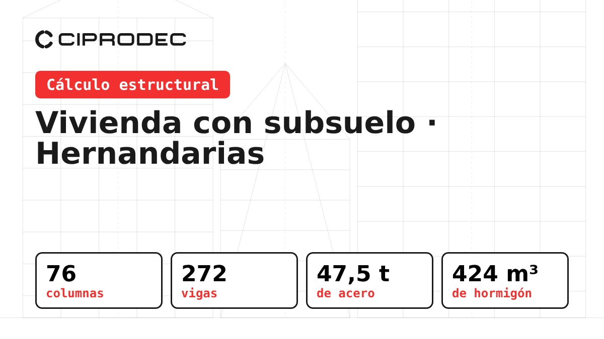
- 76
- columnaspilares
- 272
- vigasvigas
- 74
- basessapatas
- 47,5 t
- de acerode aço
- 424 m³
- de hormigónde concreto
Trabajamos para las empresas constructoras.Trabalhamos para as empresas construtoras.
Las constructoras están a full de obra. Nosotros resolvemos el proyecto, el cálculo y los números, para que tu equipo se dedique a construir. Trabajamos por pedido, bajo tu marca y en tus plazos.As construtoras estão cheias de obra. Nós resolvemos o projeto, o cálculo e os números, para que a sua equipe se dedique a construir. Trabalhamos sob demanda, com a sua marca e nos seus prazos.
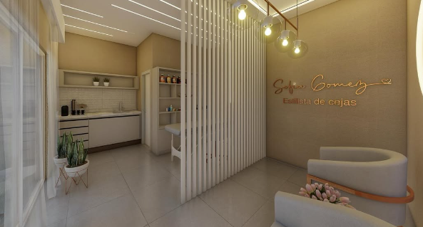
Propuestas para tu clientePropostas para o seu cliente
Diseño, implantación en el terreno y 3D listos para presentar y cerrar la venta.Projeto, implantação no terreno e 3D prontos para apresentar e fechar a venda.
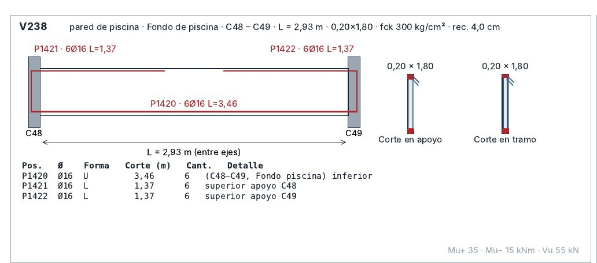
Cálculo estructuralCálculo estrutural
Hormigón armado y acero, con planos de despiece y planilla de hierros.Concreto armado e aço, com plantas de armação e tabela de ferros.
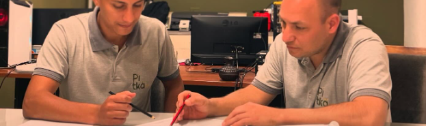
PresupuestosOrçamentos
Te acompañamos a armar y revisar el presupuesto de cada obra.Acompanhamos a montagem e a revisão do orçamento de cada obra.
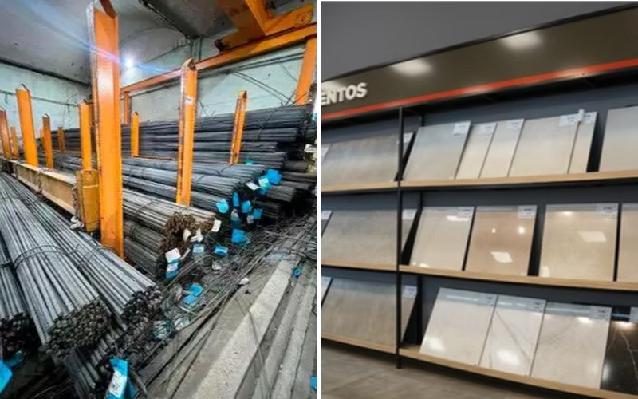
Cómputo de materialesQuantitativo de materiais
Cantidades de hormigón, hierro y materiales por etapa, sacadas del modelo.Quantidades de concreto, ferro e materiais por etapa, tiradas do modelo.
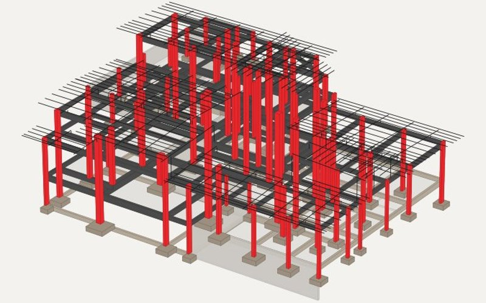
Modelo 3D interactivoModelo 3D interativo
El visor de la obra para tu equipo: cada elemento con su ficha técnica, en el celular.O visualizador da obra para a sua equipe: cada elemento com a sua ficha técnica, no celular.
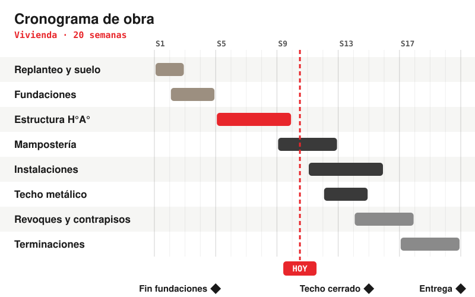
Planeamiento y administraciónPlanejamento e administração
Cronograma, documentación y seguimiento técnico-administrativo de la obra.Cronograma, documentação e acompanhamento técnico-administrativo da obra.
Áreas de servicio de CIPRODECÁreas de serviço da CIPRODEC
Un mismo equipo coordina el terreno, el proyecto, el cálculo y la obra, así la información no se pierde entre profesionales.Uma mesma equipe coordena o terreno, o projeto, o cálculo e a obra, para que a informação não se perca entre profissionais.
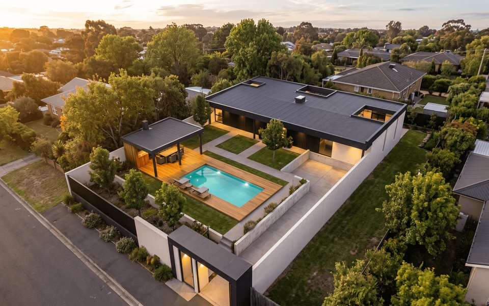
Arquitectura y proyectoArquitetura e projeto
Proyecto y documentación de obra.Projeto e documentação de obra.
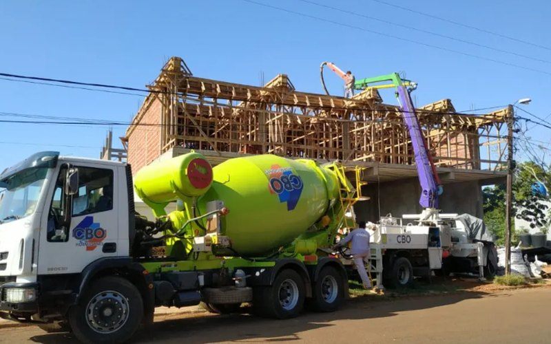
IngenieríaEngenharia
Instalaciones y soluciones técnicas para tu obra.Instalações e soluções técnicas para a sua obra.
Cálculo estructuralCálculo estrutural
Hormigón armado y acero, con planos de despiece.Concreto armado e aço, com plantas de armação.
 Ver videoVer vídeo
Ver videoVer vídeoDirección y gestión de obraDireção e gestão de obra
Seguimiento técnico con la constructora que elijas.Acompanhamento técnico com a construtora que você escolher.
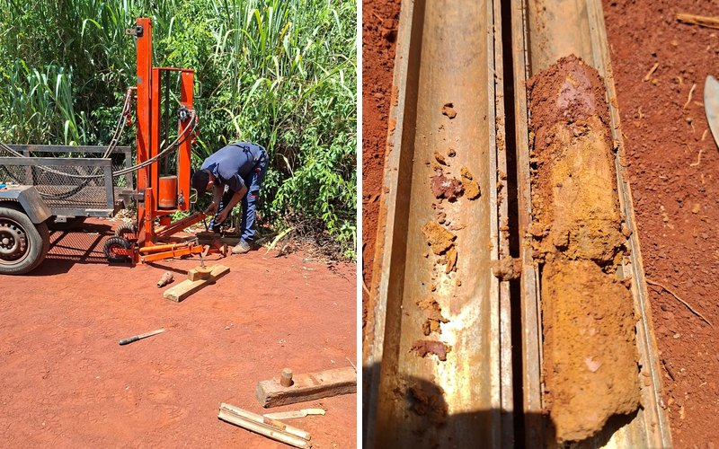
Estudio de suelosSondagem de solo
Caracterización del terreno para definir la fundación.Caracterização do terreno para definir a fundação.
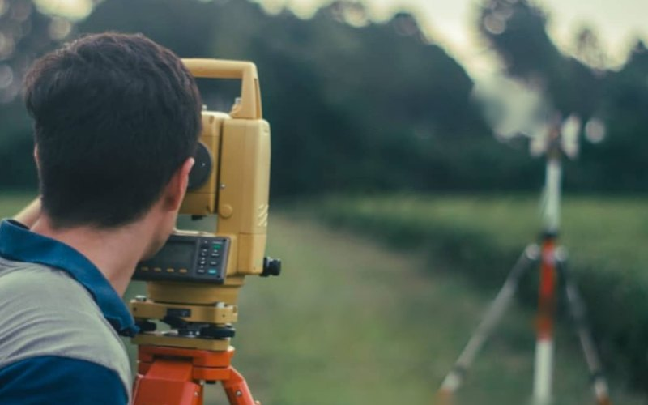
AgrimensuraAgrimensura e topografia
Relevamientos, mensuras y replanteo.Levantamentos, medições e locação de obra.
Modelado BIM (Revit)Modelagem BIM (Revit)
Ves tu obra en 3D antes de construirla, con cómputos.Veja a obra em 3D antes de construir, com quantitativos.

PaisajismoPaisagismo
Diseño de patios, jardines y espacios exteriores.Projeto de pátios, jardins e áreas externas.
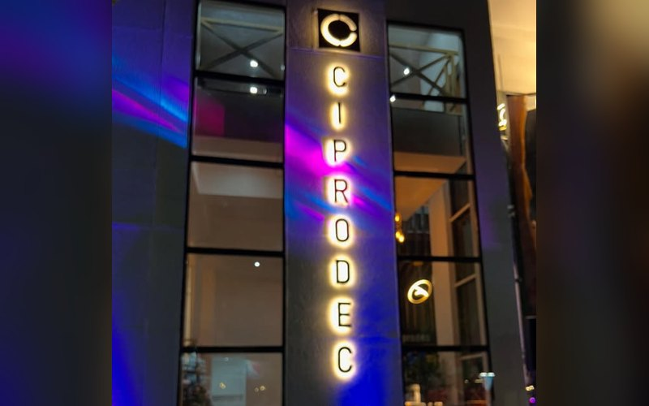
Diseño de interioresDesign de interiores
Ambientes resueltos al detalle.Ambientes resolvidos nos detalhes.
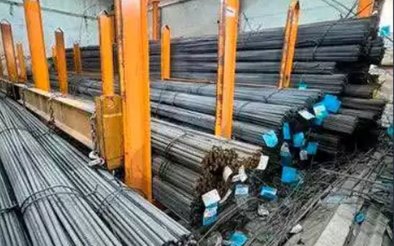
Cómputo y materialesOrçamento e materiais
Cálculo de materiales y provisión para la obra.Cálculo e fornecimento de materiais.
Seguridad e higieneSegurança do trabalho
Técnicos de seguridad e higiene para la obra.Técnicos de segurança do trabalho na obra.
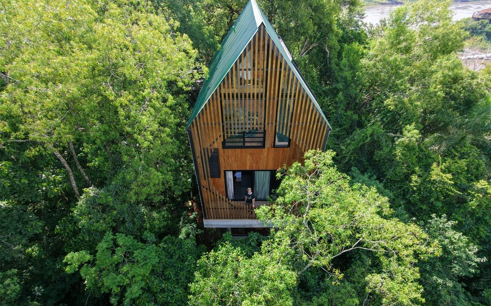
Relevamiento aéreo con droneLevantamento aéreo com drone
Fotos y videos aéreos del terreno y del avance de obra.Fotos e vídeos aéreos do terreno e do andamento da obra.
Por qué elegir CIPRODEC.Por que escolher a CIPRODEC.
Lo que venimos haciendo.O que estamos fazendo.
Proyectos de arquitectura y estructuras que desarrollamos para nuestros clientes.Projetos de arquitetura e estruturas desenvolvidos para nossos clientes.
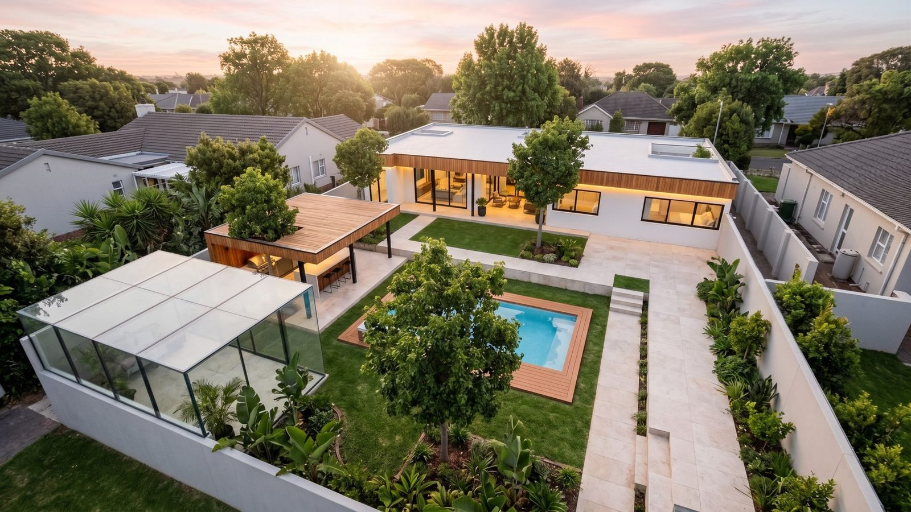
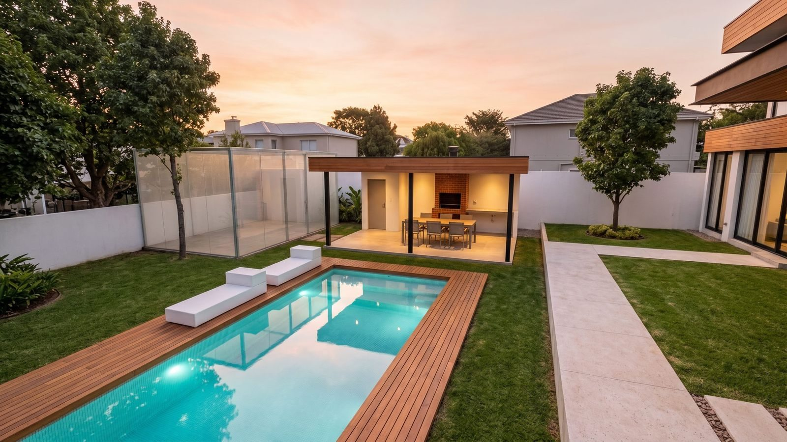
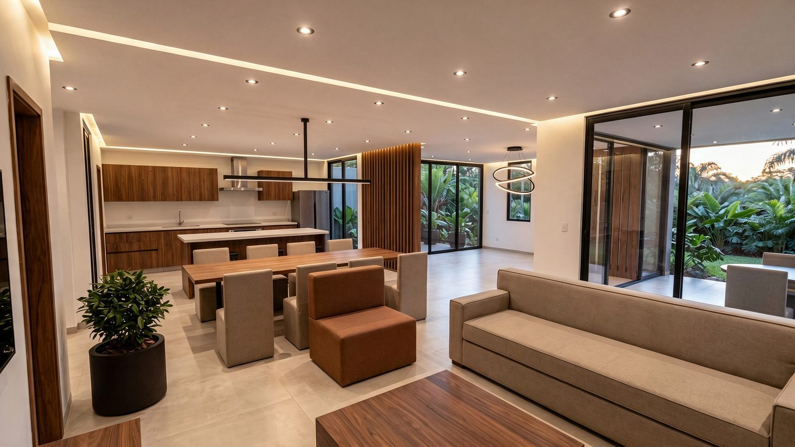
El Diario de la Obra
Cargando noticias…
Carregando notícias…
InmobiliariaImobiliária
Propiedades en venta y alquiler.Imóveis à venda e para alugar.
NoticiasNotícias
Novedades de obras, normativa y del sector.Novidades de obras, normas e do setor.
Precios de referenciaPreços de referência
Revista mensual de mano de obra y materiales en PY, AR y BR, con fuentes.Revista mensal de mão de obra e materiais no PY, AR e BR, com fontes.
Contanos qué vas a construir.Conte o que você vai construir.
Te respondemos por WhatsApp y coordinamos una reunión de 30 minutos para ver tu caso.Respondemos pelo WhatsApp e marcamos uma reunião de 30 minutos para ver o seu caso.